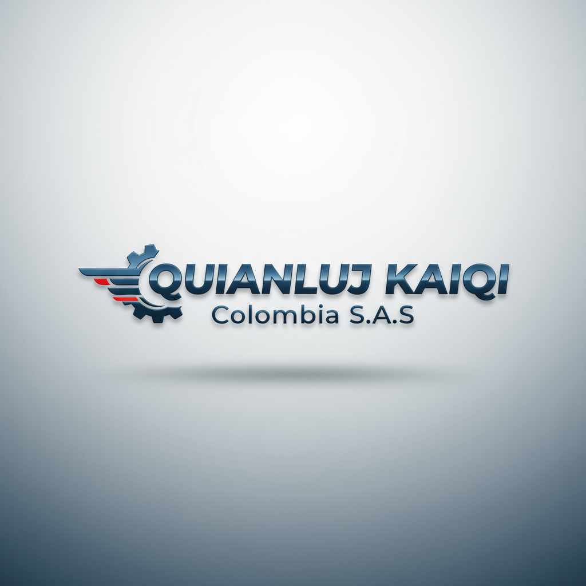

La tecnología no es solo código.
Es la conexión entre confianza, datos y personas.
Somos un sistema vivo que aprende contigo. Transformamos confianza en resultados.
Estructura Inteligente
Cada módulo piensa, siente y actúa contigo. Juntos, crean una red viva de resultados.
Selecciona un módulo para ver su descripción.
Mira cómo este sistema cobra vida en una empresa real.
Ver Caso QUIANLUJ KAIQI →Evidencia Real: El Impacto en Acción
El caso de QUIANLUJ KAIQI Colombia S.A.S. demuestra la transformación tangible que impulsa nuestro ecosistema.
Contexto: Una Marca con Potencial
QUIANLUJ KAIQI, del sector automotriz, nace con la visión de movilizar la confianza del país a través de soluciones mecánicas confiables. Su identidad visual sólida y coherente refleja una marca tecnológica, moderna y humana.
Diagnóstico: Hallazgos Clave
- Marca Coherente, Potencial Infrautilizado: La identidad visual necesita ser capitalizada con contenido emocional.
- Oportunidad en Automatización: Ausencia de un CRM consolidado, generando fugas en conversión y fidelización.
- Falta de Métricas Integradas: Decisiones basadas en percepción, no en datos consolidados.
Estrategia ADSI Aplicada
Implementamos una estrategia integral de digitalización emocional para transformar la potencia visual y técnica en un ecosistema de crecimiento, enfocada en tres áreas:
- Digitalización Inteligente y Automatización CRM.
- Estrategia de Contenidos Emocionales y Técnicos.
- Optimización del Ecosistema Omnicanal.
La identidad visual es la cara tangible de la estrategia.
Explorar Galería Visual →Galería Visual QUIANLUJ KAIQI
Identidad visual, ecosistema digital y aplicaciones de marca. Una visión tangible de confianza e innovación.
Cada imagen representa una faceta del ecosistema KAIQI: diseño, coherencia y propósito.
Continuar al Diagnóstico Ejecutivo →Acción Estratégica
Evalúa el nivel de integración de tu organización en 2 minutos.